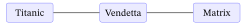
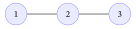
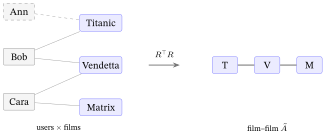
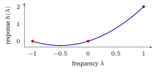
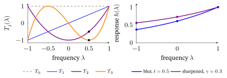

The Spectral / Graph-Filter View
1. The key idea: signals, graphs, and frequencies
In classic signal processing, a sound wave decomposes into frequencies (Fourier transform): low frequencies = slow, smooth variation; high frequencies = fast, jagged variation. Graph Signal Processing (GSP) generalizes this from a timeline to any graph.
A “signal on a graph” is just one number per node. For recommendation, take a single user \(u\): their interaction vector \(r_u \in \{0,1\}^{|I|}\) (1 for items they interacted with) is a signal living on the item–item similarity graph.
Frequencies on a graph come from the eigenvectors of the graph’s normalized adjacency \(\tilde{A}\).
From zero: eigenvector & eigenvalue (a recap; full definitions in the Linear-Algebra primer §5/§6). Hit a vector with a matrix \(\tilde{A}\) and it usually gets rotated and stretched. A few special directions \(v_k\) are only stretched, not rotated: \(\tilde{A}\,v_k = \lambda_k v_k\). Such a direction is an eigenvector; the stretch factor \(\lambda_k\) is its eigenvalue. For a symmetric \(\tilde{A}\) these eigenvectors form a complete set of perpendicular axes (the eigenbasis, here called the graph Fourier basis), so any graph signal can be written as a weighted sum of them — which is exactly what makes “reweight each frequency” well-defined. (The rectangular-matrix cousin of this is the SVD, \(M = U\Sigma V^{\top}\), used in §4 and §6.)
Each eigenvector is a pattern over the nodes; its eigenvalue \(\lambda\) is its “frequency” label (for the normalized adjacency, \(\lambda\in[-1,1]\)):
- Low frequency (\(\lambda\) near the top, \(\approx +1\)) = the pattern varies smoothly across connected nodes — neighbors have similar values.
- High frequency (\(\lambda\) near the bottom, \(\approx -1\)) = the pattern flips sign sharply between neighbors — jagged, often noise.
(The Laplacian \(L = I-\tilde{A}\) — named after the Laplace operator \(\nabla^2\) it generalizes, which measures how much a function departs from its local average (exactly what a graph Laplacian does at each node) — orders frequencies oppositely: its small eigenvalues are the smooth ones. Concretely, because \(L=I-\tilde{A}\), an eigenvalue \(\lambda\) of \(\tilde A\) becomes \(\mu=1-\lambda\) of \(L\) — so the smooth \(\lambda=+1\) mode sits at \(\mu=0\) and the jagged \(\lambda=-1\) mode at \(\mu=2\): the same ordering, relabelled. We use the adjacency convention (\(\lambda\in[-1,1]\), smooth at \(+1\)) throughout; if you meet the Laplacian and \(\mu\in[0,2]\) in other sources, translate with \(\mu=1-\lambda\).)
The Graph Fourier Transform (GFT) — Fourier after Joseph Fourier, who showed any signal is a sum of frequencies — projects a signal onto these eigenvectors; you then filter by reweighting frequencies, and transform back. (Working in terms of this set of eigenvalues — the spectrum of \(\tilde A\), by analogy with a prism splitting light into its spectrum of colours — is what the word spectral means.)
The recommendation intuition. Two items that are co-watched a lot are “neighbors.” A user’s true preferences should be smooth over this graph — if you like an item, you probably like its neighbors. So the useful part of a user’s interaction signal is low-frequency; the sparse, idiosyncratic, noisy part is high-frequency. Keeping the low frequencies (a low-pass filter) = denoising the preferences = predicting what else they’ll like.
2. Recommendation = low-pass graph filtering
Concretely, the GSP recipe for collaborative filtering:
- Build an item–item (or user–item) similarity / normalized adjacency matrix \(\tilde{A}\) from the interactions.
- Take a user’s interaction vector \(r_u\) as the input signal.
- Apply a low-pass filter \(H\) to smooth it: \(\hat{r}_u = H\,r_u\).
- The smoothed signal \(\hat{r}_u\) scores all items — including ones \(u\) never touched. Recommend the top-scoring unseen items.
Step 1, concretely: how to build \(\tilde A\) for items (from zero). Let \(R\in\{0,1\}^{|U|\times|I|}\) be the user–item interaction matrix (row = a user, \(1\) = interacted). The raw item–item co-occurrence is the Gram matrix \(G=R^{\top}R\) (Linear-Algebra primer — a matrix times its transpose): entry \(G_{ij}\) counts the users who interacted with both items \(i\) and \(j\), and the diagonal \(G_{ii}\) is item \(i\)’s popularity. Zero the diagonal to leave a pure co-occurrence adjacency \(A\), then symmetric-normalize exactly as for any graph: \(\tilde A=D^{-1/2}AD^{-1/2}\) with \(D\) the degree (row-sum) matrix. (The user–item bipartite \(\tilde A\) of From Graphs to LightGCN is the same recipe on the rectangular \(R\) instead of on \(R^{\top}R\).) This is not a side note — it is where the worked graph below comes from: two users, A who interacted with items ①② and B with items ②③, give
\[ R=\begin{bmatrix}1&1&0\\[1pt]0&1&1\end{bmatrix},\qquad R^{\top}R=\begin{bmatrix}1&1&0\\1&2&1\\0&1&1\end{bmatrix}, \]
whose off-diagonal (co-occurrence) part, symmetric-normalized, is exactly the path-graph \(\tilde A\) of §3.1 — the hub item ② was co-watched with both ① and ③, while ① and ③ never co-occur (\(G_{13}=0\)).

A filter \(H\) is defined by a function \(h(\lambda)\) applied to each frequency: \(H = \sum_k h(\lambda_k)\, v_k v_k^\top\), where \((\lambda_k, v_k)\) are eigenvalue/eigenvector pairs. “Low-pass” means \(h\) is large for low frequencies and small for high ones — it passes the smooth part and suppresses the jagged part. The whole game is choosing \(h(\lambda)\).
Where does \(H=\sum_k h(\lambda_k)\,v_k v_k^\top\) come from? (Building the filter from zero.) A symmetric matrix is its frequencies. Each \(v_k v_k^\top\) is an outer product (Linear-Algebra primer) — a projector that extracts the part of any signal pointing along \(v_k\). Adding these up, weighted by the eigenvalues, rebuilds the matrix itself: \(\tilde A=\sum_k\lambda_k\,v_k v_k^\top\) (the spectral decomposition — on the 3-item graph below, \((+1)v_1v_1^\top+0\cdot v_2v_2^\top+(-1)v_3v_3^\top\) multiplies back out to exactly \(\tilde A\)). Applying any function \(h\) to the matrix then just means applying \(h\) to each eigenvalue: \(H=\sum_k h(\lambda_k)\,v_k v_k^\top\) scales frequency \(k\) by \(h(\lambda_k)\) and leaves its pattern \(v_k\) untouched. That single fact is what the rest of the chapter rests on.
3. LightGCN through the spectral lens
Here is the unification. Recall (From Graphs to LightGCN) that \(K\) LightGCN layers, before the layer combination, compute powers of the normalized adjacency: \[ E^{(K)} = \big(D^{-1/2} A\, D^{-1/2}\big)^{K} E^{(0)} = \tilde{A}^{K} E^{(0)}. \] And the layer combination \(\sum_{k=0}^{K}\alpha_k \tilde{A}^{k}\) is a polynomial in \(\tilde{A}\). In the eigenbasis, multiplying by \(\tilde{A}\) scales each frequency by its eigenvalue \(\lambda_k \in [-1,1]\) — because \(\tilde A v_k=\lambda_k v_k\) gives \(\tilde A^2 v_k=\tilde A(\lambda_k v_k)=\lambda_k^2 v_k\) and, by induction, \(\tilde A^{\,j}v_k=\lambda_k^{\,j}v_k\), so the polynomial \(\sum_j\alpha_j\tilde A^{\,j}\) acts on \(v_k\) as the number \(\sum_j\alpha_j\lambda_k^{\,j}\). So:
\[ \underbrace{\sum_{k=0}^{K}\alpha_k \tilde{A}^{k}}_{\text{LightGCN}} \;=\; \sum_{k}\underbrace{\Big(\sum_{j}\alpha_j \lambda_k^{\,j}\Big)}_{h(\lambda_k)\ =\ \text{a polynomial low-pass filter}} v_k v_k^\top. \]
Therefore LightGCN is exactly a low-order polynomial low-pass graph filter. Each propagation layer raises the polynomial’s degree by one. The top eigenvalue is \(\lambda\approx +1\) (the smooth, low-frequency collaborative signal) while every other eigenvalue has \(|\lambda|<1\); a low-pass polynomial \(h(\lambda)\) is one whose coefficients make it large at \(\lambda\approx +1\) and small elsewhere, so it keeps the smooth signal and suppresses the jagged high-frequency (\(\lambda\approx -1\)) part. (The worked example in §3.1 shows a degree-2 filter doing exactly this — its response is \(0\) at both \(\lambda=0\) and \(\lambda=-1\).)
This single fact explains things from the earlier notes:
- Why neighbor-averaging works — it is low-pass smoothing.
- Why over-smoothing happens (From Graphs to LightGCN §12) — too many layers = too aggressive a low-pass, so only the very lowest frequency (a near-constant) survives and all embeddings collapse. Spectrally, \(\tilde{A}^{k}\) for large \(k\) projects onto the top eigenvector alone (the \(\lambda\approx +1\) direction).
- Why \(W\) and \(\sigma\) were removable (From Graphs to LightGCN §14) — the useful work was the filtering, not the transformation.
Over-smoothing, as a number — layer count is filter degree. The top mode has \(\lambda=+1\), so under the \(k\)-hop filter \(h_k(\lambda)=\lambda^{k}\) it keeps weight \(1^{k}=1\) for any \(k\). Every other mode has \(|\lambda|<1\), so its weight \(\lambda^{k}\) shrinks geometrically with the layer count. A second, fairly-smooth mode at \(\lambda=0.8\) keeps \(0.8^{1}=0.80\) of the top’s weight at \(1\) hop, \(0.8^{4}=0.41\) at \(4\) hops, and only \(0.8^{16}=0.028\) at \(16\) hops — by then just the \(\lambda\approx+1\) direction is left and embeddings collapse. So adding a layer = raising the filter degree = a sharper low-pass: picking the number of layers and picking how aggressively to smooth are the same knob.
(Caveat for the §3.1 graph: the 3-item path is a special bipartite case whose bottom mode sits exactly at \(\lambda=-1\), so \(\lambda^{k}\) keeps magnitude \(1\) and that one mode does not decay — its sign just flips each hop. The geometric decay above is the generic case: every non-top mode has \(|\lambda|<1\) once the graph has self-loops or any odd cycle, as real co-occurrence graphs do.)
Punchline: “graph convolution” and “graph filtering” are the same operation seen from two angles — spatial (average your neighbors) vs. spectral (reweight frequencies). LightGCN is the spatial face of a low-pass filter.
3.1 The whole idea on a 3-item graph (by hand)
Three items on a tiny item–item graph (we use item–item here for a clean by-hand check; the identical filtering math runs on From Graphs to LightGCN’s bipartite user–item \(\tilde{A}\) — only the graph changes, not the idea): items ① and ③ were each co-watched with the hub item ②, but ① and ③ were never co-watched directly — a path ①—②—③:

Its adjacency, with degrees \((1,2,1)\):
\[ A = \begin{bmatrix} 0&1&0 \\ 1&0&1 \\ 0&1&0 \end{bmatrix}. \]
Symmetric-normalize, \(\tilde{A}=D^{-1/2}AD^{-1/2}\) (with \(1/\sqrt2\approx0.707\)):
\[ \tilde{A} = \begin{bmatrix} 0&0.707&0 \\ 0.707&0&0.707 \\ 0&0.707&0 \end{bmatrix}. \]
Its three frequencies (eigenvalue \(\lambda\), eigenvector \(v\)) — all hand-checkable:
| \(\lambda\) | eigenvector \(v\) | what it looks like |
|---|---|---|
| \(+1\) (low) | \([0.5,\;0.707,\;0.5]\) | smooth — all same sign |
| \(0\) (mid) | \([0.707,\;0,\;-0.707]\) | hub ② silent, ends opposite |
| \(-1\) (high) | \([0.5,\;-0.707,\;0.5]\) | jagged — signs flip at every edge |
(Check the low one: row 1 of \(\tilde A v\) is \(0.707\times0.707=0.5=1\times0.5\) ✓; this is the “neighbors agree” pattern, exactly low frequency. We use \(0.707\) as shorthand for \(1/\!\sqrt{2}\); the identity is \((1/\!\sqrt{2})^2 = 1/2\) exactly — a calculator showing \(0.49985\) is the rounding of \(0.707\), not a math error.)

Now filter a user who clicked only item ①, signal \(r=[1,0,0]\). Smooth it with a degree-2 polynomial filter \(H=\tilde{A}+\tilde{A}^2\) (a 2-layer LightGCN-style filter):
- \(\tilde{A}\,r = [0,\;0.707,\;0]\) — one hop: the hub ② lights up.
- \(\tilde{A}^2 r = [0.5,\;0,\;0.5]\) — two hops: item ③, never clicked, lights up.
- \(H r = [0.5,\;0.707,\;0.5]\) — so item ③ scores \(0.5>0\) and is recommended, purely from the 2-hop co-watch chain ①—②—③.
The same computation, in the frequency domain (the GFT round-trip). Project \(r\) onto the three eigenvectors, scale each coefficient by \(h(\lambda)\), then rebuild:
| frequency \(\lambda\) | eigenvector \(v\) | coeff \(c=v\cdot r\) | \(h(\lambda)\) | kept \(h(\lambda)\,c\) |
|---|---|---|---|---|
| \(+1\) (low) | \([0.5,\,0.707,\,0.5]\) | \(0.5\) | \(2\) | \(1.0\) |
| \(0\) (mid) | \([0.707,\,0,\,-0.707]\) | \(0.707\) | \(0\) | \(0\) |
| \(-1\) (high) | \([0.5,\,-0.707,\,0.5]\) | \(0.5\) | \(0\) | \(0\) |
Reconstruct from the surviving row: \(1.0\times[0.5,0.707,0.5]=[0.5,0.707,0.5]=Hr\) — identical to the spatial hops above. Multiplying by \(\tilde A\) (spatial) and reweighting frequencies (spectral) are two views of the one operation.
Why this is “low-pass,” exactly. The filter’s response is \(h(\lambda)=\lambda+\lambda^2\), so \(h(+1)=2\), \(h(0)=0\), \(h(-1)=0\): it keeps only the smooth \(\lambda=+1\) frequency and zeroes the other two. In the eigenbasis the click \(r=[1,0,0]\) splits onto all three frequencies, with coefficients \(0.5\) (low), \(0.707\) (mid), \(0.5\) (high) — the mid part is in fact the largest. Multiplying by \(h(+1)=2,\ h(0)=0,\ h(-1)=0\) keeps only the smooth \(\lambda=+1\) component and zeroes both the mid and the jagged high parts; rebuilding from what survives gives \(Hr=2(0.5)\,[0.5,0.707,0.5]=[0.5,0.707,0.5]\) — the same vector the spatial calculation found above, now spreading ①’s single click onto its co-watch neighbours. Denoising-by-low-pass is recommendation — on three items you can check by hand.


4. If it’s just a filter, do we even need to train? (Closed-form methods)
If recommendation is “apply a fixed low-pass filter,” you can often skip gradient descent entirely and write the filter in closed form — no learned embeddings, no epochs.
- GF-CF (“How Powerful is Graph Convolution for Recommendation?”, Shen et al., CIKM 2021) — argues a simple linear low-pass filter on the normalized interaction matrix matches or beats trained GCNs. Combines a smoothing filter with an ideal low-pass (top singular vectors). Training-free.
- PGSP (Personalized Graph Signal Processing) — adds a personalized mid/low-pass component so the filter adapts per user, not one-size-fits-all. Mechanically, PGSP mixes, per user, a low-pass component (smooth the interaction signal over the item graph, as GF-CF does) with an identity/all-pass component (keep the user’s own raw signal unchanged), where the mixing weight is driven by that user’s own interaction profile — so a user with sparse, distinctive tastes leans on the all-pass term while a mainstream user leans on the smooth low-pass, giving each user a tailored low-to-mid-pass response rather than one global filter.
- PSGE (Pure Spectral Graph Embeddings, ECIR 2023; not PGSP above — PSGE builds static factors, PGSP builds a per-user filter) — builds user/item factors directly from the top eigenvectors / truncated SVD of the normalized interaction matrix; reports state-of-the-art top-\(K\) accuracy at orders-of-magnitude lower runtime than gradient-trained GCNs — because there is nothing to train.
GF-CF in our 3-item terms (by hand). GF-CF’s filter is a sum of two low-passes: a linear one — the normalized item–item adjacency \(\tilde A\) itself (one hop of smoothing) — plus an ideal one — a hard projection onto the smoothest component, here the top eigenvector \(v_{+1}\) via the §2 projector \(v_{+1}v_{+1}^\top\). Score the single click \(r=[1,0,0]\) with \(H_{\text{GF-CF}}=\tilde A+\alpha\,v_{+1}v_{+1}^\top\) (take \(\alpha=1\)): \[ \tilde A\,r=[0,\,0.707,\,0],\qquad v_{+1}v_{+1}^\top r=(v_{+1}\!\cdot r)\,v_{+1}=0.5\,[0.5,0.707,0.5]=[0.25,\,0.354,\,0.25], \] so \(H_{\text{GF-CF}}\,r=[0.25,\,1.061,\,0.25]\) and item ③ (never clicked) scores \(0.25>0\) — recommended. Note which term reaches ③: the one-hop linear part \(\tilde A r\) lights only the hub ②; it is the ideal global low-pass \(v_{+1}v_{+1}^\top\) that carries the click all the way to ③ — exactly why GF-CF combines the two. (The published method first row-normalizes the interaction matrix and takes the ideal part from a top-\(q\) SVD rather than a single eigenvector; the structure — linear low-pass \(+\) ideal low-pass — is what we reproduced by hand.)
The lesson: for static top-\(K\) retrieval, a well-chosen closed-form filter is a brutally strong, fast baseline. Many “fancy GCN” gains evaporate against it — GF-CF’s own paper reports roughly a 70% gain over LightGCN on the (sparse) Amazon-Book benchmark, with no training at all: a closed-form filter, where LightGCN needs a full gradient-trained run.
What does “spectral” actually cost? (When is it feasible?) A filter \(h(\tilde A)\) can be applied two ways, and the cost gap is enormous:
- Polynomial filter (no eigendecomposition). A degree-\(K\) filter \(\sum_k\alpha_k\tilde A^{k}\) — i.e. LightGCN propagation, GF-CF’s smoothing term — is just \(K\) sparse matrix–vector products. Cost \(\approx K\cdot\mathrm{nnz}(\tilde A)\) (nnz = number of non-zero entries = interaction count), and never forms a dense matrix. This is what scales to tens of millions of items.
- Spectral filter (needs the eigenvectors). Anything using \(v_kv_k^\top\) explicitly — an ideal low-pass, PSGE, the SVD view — needs an eigendecomposition / SVD. A full dense one on \(n\) items costs \(O(n^{3})\) time and \(O(n^{2})\) memory: at \(n=40\,000\) items that is already \(\sim\!6\times10^{13}\) flops and a \(\sim\!13\) GB dense matrix — infeasible. The fix is a truncated top-\(q\) SVD (Lanczos / randomized SVD, Halko et al. 2011), which on a sparse \(\tilde A\) costs \(\approx \mathrm{nnz}\cdot q\) — cheap, and it returns exactly the few smooth components a low-pass keeps.
So “spectral is fast” really means: use a low-order polynomial, or a top-\(q\) truncation on a sparse matrix — never a full dense eigendecomposition. That is the whole reason the training-free methods of this section beat trained GCNs on wall-clock: there is nothing to train, and the filter is a handful of sparse multiplies.
5. Beyond a fixed low-pass: shaped and learnable filters
A pure low-pass throws away all high frequencies — but some high-frequency content is signal (sharp, distinctive tastes), not noise. So a richer line shapes the whole frequency response \(h(\lambda)\):
- PolyCF (arXiv:2401.12590; ACM TOIS) — learns an optimal polynomial graph filter, approximating the ideal frequency response across the full spectrum instead of a hand-set low-pass. Filter form: \(h(\lambda)=\sum_{j=0}^{K}\theta_j\lambda^j\), with the coefficients \(\theta_j\) learned end-to-end so the polynomial best fits the data’s true frequency response.
- ChebyCF (Graph Spectral Filtering with Chebyshev Interpolation, SIGIR 2025; arXiv:2505.00552) — uses Chebyshev polynomial interpolation to fit an expressive, numerically stable filter, with fast batched computation in sparse regimes; reported to dominate prior methods on LastFM / Gowalla / Amazon-Book. Filter form: \(h(\lambda)=\sum_{j=0}^{K}\theta_j T_j(\lambda)\), where \(T_j\) are Chebyshev basis polynomials. The natural fit is the equioscillation property: among all degree-\(K\) polynomials, Chebyshev polynomials minimize the maximum approximation error of any target response \(h(\lambda)\) over \([-1,1]\), spreading the error evenly (equioscillating) rather than letting it spike at the endpoints — so they deliver the most expressive filter with the fewest terms, which is why they dominate the learned-filter literature. ChebyCF applies this filter to the user’s raw interaction history (no learned embeddings) and adds two pieces that lift it to SOTA — an additional ideal-pass filter and a degree-based normalization — together overcoming the frequency-cutoff-and-restricted-linear-form bottleneck of plain graph convolution.
- BSPM (Blurring-Sharpening Process Models, Choi et al., SIGIR 2023) — borrows from score-based / diffusion models: first blur (low-pass smooth) the signal, then sharpen it — recovering some informative high-frequency detail a plain low-pass would discard. Filter form: a blur step \(h_{\text{blur}}(\lambda)\) (typically a low-pass polynomial or heat kernel, e.g. \(h_{\text{blur}}(\lambda)=e^{-t(1-\lambda)}\)), followed by a sharpening step that re-adds the suppressed high-frequency residual: \(h(\lambda)=h_{\text{blur}}(\lambda)+\alpha\bigl(1-h_{\text{blur}}(\lambda)\bigr)\), where \(\alpha\in(0,1)\) controls how much of the high-frequency residual is re-injected. The net response is strictly between the original blur and the identity — more expressive than a pure low-pass without discarding all sharp content.
- ASPIRE (arXiv:2604.22549, 2026) — adaptive spectral filter learning, framed explicitly as “make spectral CF great again.” Its diagnosis is sharper than “just learn the filter”: the standard ranking (BPR) objective induces a low-frequency explosion that hinders filter learning, and ASPIRE fixes it with a bi-level optimization that disentangles the filter from that bias — so \(h(\lambda)\) is learned adaptively per dataset, rivals hand-engineered filters, and even extends to LLM-powered CF.
These trade the training-free simplicity of §4 for an expressive, sometimes-learned frequency response. The unifying question is always the same: what is the best \(h(\lambda)\)?
6. Reconnecting to LightGCL and the SVD view (SSL & Contrastive Learning)
The spectral lens explains why LightGCL (SSL & Contrastive Learning §5) works. LightGCL’s second contrastive view is a truncated SVD of the adjacency,
\[ \hat{A} \approx U_q\,\Sigma_q\,V_q^{\top}, \]
keeping only the top-\(q\) singular components (the decomposition SSL & Contrastive Learning §5 introduced on the interaction matrix: \(U_q, V_q\) = the dominant user/item patterns, \(\Sigma_q\) = their strengths). Keeping the largest singular values acts as an ideal low-pass filter — a hard cutoff that passes the top components and zeroes the rest — versus LightGCN’s soft polynomial roll-off.
Why SVD is low-pass even though “largest singular value” sounds like “highest frequency.” The SVD operates on the non-negative similarity spectrum — e.g. the Gram matrix \(\tilde A\tilde A^{\top}\), whose eigenvalues are the squared singular values of \(\tilde A\) and are all \(\geq 0\). On this spectrum “large” always means “smooth / strongly correlated,” because the top singular vectors capture the dominant, globally coherent co-occurrence patterns. This is not the signed adjacency spectrum of §1, where \(\lambda\approx -1\) is high frequency and the ordering is reversed. Keeping the top-\(q\) singular values is therefore unambiguously a low-pass on the similarity spectrum — “top” here means “smoothest,” not “jaggiest.”
So:
- LightGCN propagation = an approximate, polynomial low-pass (smooth but leaks some high frequencies; only sees a few hops).
- LightGCL’s SVD view = an ideal, global low-pass (exact top-\(q\) spectrum; sees the whole graph at once).
Contrasting the two views is, spectrally, contrasting a local polynomial filter against a global ideal filter — which is why LightGCL captures global collaborative structure that local propagation misses. The spectral view thus unifies three chapters: graph convolution (From Graphs to LightGCN), contrastive SSL (SSL & Contrastive Learning), and filtering (this chapter) are one circle.
7. When to reach for the spectral view — trade-offs
| Strength | Weakness | |
|---|---|---|
| Closed-form filters (GF-CF, PSGE) | No training; very fast; strong static top-\(K\); great baseline | No per-user learned params; harder to fold in side-features; recompute on graph change |
| Learned/poly filters (PolyCF, ChebyCF) | Expressive frequency response; SOTA accuracy | More tuning; lose the “zero-training” appeal |
| Embedding GCNs (LightGCN, +GCL) | Learn rich embeddings; easy to extend (LLM signal, multimodal, sequential) | Slower; over-smoothing; the gains can be matched by a good filter |
Practical takeaways:
- Always run a closed-form spectral baseline (GF-CF / PSGE) before claiming a GCN win — reviewers increasingly expect it, and it’s nearly free.
- The spectral view gives a principled story for over-smoothing and layer count: pick layers = pick polynomial filter degree.
- For LLM-augmented work (e.g. RLMRec), the embedding-GCN line is still the right host — you need learnable embeddings to align with LLM semantics — but spectral methods are the baseline floor and a source of design ideas (e.g. an SVD/ideal low-pass component, à la LightGCL).
8. Recent developments (2024–2026) — verified 2026-06-07
- ChebyCF — SIGIR 2025 (arXiv:2505.00552): Chebyshev-interpolated spectral filter; strong, stable, fast.
- PolyCF — arXiv:2401.12590 / ACM TOIS: optimal polynomial graph filters.
- ASPIRE — arXiv:2604.22549 (2026): adaptive spectral filter learning.
- GSPRec — arXiv:2505.11552 (2025): temporal-aware spectral filtering (adds a time axis to the filter).
- Hierarchical Graph Signal Processing for CF — WWW 2024 (https://dl.acm.org/doi/10.1145/3589334.3645368): multi-scale GSP.
- Spectrum-shift / side-information spectral CF — arXiv:2502.08071 (2025).
The throughline of 2024–2026: spectral / training-free CF is resurgent, repeatedly shown competitive with or better than trained GCNs at a fraction of the cost — a strong reason to include it as a baseline and to mine it for filter-design ideas.
9. Exercises
Work these by hand — the numbers are kept tiny on purpose, and almost all of them reuse the 3-item path graph ①—②—③ of §3.1 (its \(\tilde A\), its three frequencies \(\lambda\in\{+1,0,-1\}\) with eigenvectors \([0.5,0.707,0.5]\), \([0.707,0,-0.707]\), \([0.5,-0.707,0.5]\), and the single-click signal \(r=[1,0,0]\)). Full worked solutions are in the Solutions appendix at the back of the book.
-
(compute) Build the item graph from scratch (the §2 recipe). Two users gave the interaction matrix \(R=\begin{bmatrix}1&1&0\\0&1&1\end{bmatrix}\) (user A touched items ①②, user B touched ②③). Form the co-occurrence \(G=R^{\top}R\), zero its diagonal to get the adjacency \(A\), read off the degrees, and symmetric-normalize \(\tilde A=D^{-1/2}AD^{-1/2}\). Confirm you land on exactly the path-graph \(\tilde A\) of §3.1.
-
(compute) Verify by hand that \(v_{+1}=[0.5,\,0.707,\,0.5]\) is an eigenvector of the path-graph \(\tilde A=\begin{bmatrix}0&0.707&0\\0.707&0&0.707\\0&0.707&0\end{bmatrix}\) with eigenvalue \(+1\): compute \(\tilde A\,v_{+1}\) one row at a time (use \(0.707\times0.707=0.5\)) and check it equals \(1\cdot v_{+1}\). Why does this make \(\lambda=+1\) the lowest frequency?
-
(concept) §1 calls the \(\lambda\approx+1\) eigenvector the “smooth, low-frequency” pattern and ties low frequency to popular / denoised preferences. In two or three sentences, explain why the \(\lambda\)-near-\(+1\) direction is the smooth one (use \(\tilde A v=\lambda v\): what must be true of neighbouring node values for \(\tilde A\) to leave the pattern almost unchanged?), and why keeping only it is “denoising” a user’s sparse clicks.
-
(compute) The GFT round-trip, no filter. Take the single click \(r=[1,0,0]\). (a) Compute its three frequency coordinates \(c_k=v_k\cdot r\) against the eigenvectors of §3.1. (b) Reconstruct \(\sum_k c_k v_k\) and confirm you get \(r\) back exactly. (This is the “transform, then transform back” identity that any filter sits inside.)
-
(compute) Now filter in the frequency domain. Use the linear low-pass response \(h(\lambda)=\dfrac{\lambda+1}{2}\), so \(h(+1)=1,\ h(0)=0.5,\ h(-1)=0\). Starting from the coordinates \(c_k\) of Exercise 4, scale each by \(h(\lambda_k)\) and rebuild \(\hat r=\sum_k h(\lambda_k)\,c_k v_k\). What score does item ③ (never clicked) receive, and how does down-weighting — rather than zeroing — the mid frequency compare with §3.1’s \(h=\lambda+\lambda^2\) filter (which zeroed it)?
-
(compute) Over-smoothing as \(\lambda^k\) decay. Under a \(k\)-hop filter \(h_k(\lambda)=\lambda^{k}\) each mode keeps weight \(\lambda^{k}\). (a) The top mode has \(\lambda=+1\); what is \(1^{k}\) for any \(k\)?
- For a generic second mode at \(\lambda=0.8\), compute \(0.8^{k}\) at \(k=1,4,8,16\). (c) In one sentence, say what these numbers mean for “how many LightGCN layers is too many,” and why the \(\lambda=-1\) mode of this particular path graph is the bipartite exception that does not decay.
-
(concept) §2 builds the filter from rank-1 projectors \(v_k v_k^{\top}\). Take \(v=v_{+1}=[0.5,0.707,0.5]\) and let \(P=v v^{\top}\). Without multiplying the whole \(3\times3\) matrix out, explain why (i) \(Pv=v\), (ii) \(P\,w=0\) for any \(w\) orthogonal to \(v\) (e.g. \(v_{-1}\)), (iii) \(P\) is idempotent (\(P^2=P\)), and (iv) \(\operatorname{trace}P=1\). What single job does \(P\) do to an arbitrary signal?
-
(concept) §4’s cost box contrasts two ways to apply a filter. A degree-\(K\) polynomial filter \(\sum_k\alpha_k\tilde A^{k}\) costs \(\approx K\cdot\mathrm{nnz}(\tilde A)\) and never densifies; an ideal/spectral filter that needs the eigenvectors \(v_k v_k^{\top}\) costs a full \(O(n^{3})\) eigendecomposition with \(O(n^{2})\) memory. For \(n=40{,}000\) items, roughly how many flops is \(n^{3}\), and how large (in GB, at 8 bytes per entry) is the dense \(n\times n\) matrix? State the one-line rule the box draws from this, and name the cheaper middle option.
-
(extend) Rebuild the matrix from its frequencies. §2 states the spectral decomposition \(\tilde A=\sum_k \lambda_k\,v_k v_k^{\top}\). For the path graph that is \((+1)\,v_{+1}v_{+1}^{\top}+0\cdot v_0 v_0^{\top}+(-1)\,v_{-1}v_{-1}^{\top}\). Compute the \((1,2)\) entry of this sum (just the two surviving terms at row 1, column 2) and confirm it equals \(\tilde A_{12}=0.707\). What does the \(0\cdot v_0v_0^{\top}\) term contribute, and why is that consistent with \(\lambda=0\) being a frequency the matrix “passes through to nothing”?
-
(apply) Connect the filter back to LightGCN propagation. §3 says \(K\) LightGCN layers compute \(\tilde A^{K}E^{(0)}\) and the layer combination \(\sum_{k=0}^{K}\alpha_k\tilde A^{k}\) is a polynomial in \(\tilde A\). Take the click \(r=[1,0,0]\) and a 3-layer mean combination \(\alpha_k=\tfrac13\) for \(k=0,1,2\), i.e. \(\hat r=\tfrac13\big(r+\tilde A r+\tilde A^{2}r\big)\).
- Using \(\tilde A r=[0,0.707,0]\) and \(\tilde A^{2}r=[0.5,0,0.5]\), compute \(\hat r\). (b) Confirm this equals the spectral form \(\sum_k h(\lambda_k)\,c_k v_k\) with \(h(\lambda)=\tfrac13(1+\lambda+\lambda^2)\), so \(h(+1)=1,\ h(0)=\tfrac13,\ h(-1)=\tfrac13\) — i.e. “average the first three hops” is a low-pass filter that keeps the smooth mode fully and damps the rest.
-
(compute) — read a low-pass filter off the eigenvalues. A degree-2 LightGCN-style filter is \(h(\lambda)=\lambda+\lambda^2\) (§3). For the 3-item graph’s eigenvalues \(\lambda=+1,\,0,\,-1\), compute \(h\) at each. (a) Which frequency is amplified most? (b) Which are killed — and why does keeping the \(\lambda{=}{+}1\) (smooth) mode while zeroing the rest make this a low-pass filter?
-
(concept) — why run a training-free baseline? §4 reports that GF-CF — a closed-form spectral filter — beats LightGCN by about 70% on the (sparse) Amazon-Book benchmark with no training. (a) What does “training-free” mean for GF-CF (what is there not to learn)? (b) Why run a closed-form spectral baseline before claiming a trained GCN is the winner?
10. References
-
Choi, J., Hong, S., Park, N., & Cho, S.-B. (2023). Blurring-sharpening process models for collaborative filtering. In Proceedings of the 46th International ACM SIGIR Conference on Research and Development in Information Retrieval (SIGIR). arXiv:2211.09324
-
D’Amico, E., Lawlor, A., & Hurley, N. (2023). Pure spectral graph embeddings: Reinterpreting graph convolution for top-N recommendation. In Proceedings of the 45th European Conference on Information Retrieval (ECIR). arXiv:2305.18374
-
He, X., Deng, K., Wang, X., Li, Y., Zhang, Y., & Wang, M. (2020). LightGCN: Simplifying and powering graph convolution network for recommendation. In Proceedings of the 43rd International ACM SIGIR Conference on Research and Development in Information Retrieval (SIGIR). arXiv:2002.02126
-
He, Y., Xu, C., Wang, J., & Zhang, W. (2025). Collaborative filtering meets spectrum shift: Connecting user–item interaction with graph-structured side information. In Proceedings of the 31st ACM SIGKDD Conference on Knowledge Discovery and Data Mining (KDD). arXiv:2502.08071
-
He, Y., Xu, C., Zhu, Z., Yin, H., & Zhang, W. (2026). ASPIRE: Make spectral graph collaborative filtering great again via adaptive filter learning. arXiv preprint arXiv:2604.22549.
-
Kim, C., Sung, J., Han, Y., & Lee, J. (2025). Graph spectral filtering with Chebyshev interpolation for recommendation. In Proceedings of the 48th International ACM SIGIR Conference on Research and Development in Information Retrieval (SIGIR 2025). https://dl.acm.org/doi/10.1145/3726302.3729991; arXiv:2505.00552
-
Liu, J., Li, D., Gu, H., Lu, T., Zhang, P., Shang, L., & Gu, N. (2023). Personalized graph signal processing for collaborative filtering. In Proceedings of the ACM Web Conference (WWW). arXiv:2302.02113
-
Qin, Y., Ju, W., Luo, X., Gu, Y., Xiao, Z., & Zhang, M. (2025). PolyCF: Towards the optimal spectral graph filters for collaborative filtering. ACM Transactions on Information Systems, 43(4). https://dl.acm.org/doi/10.1145/3728464; arXiv:2401.12590
-
Rabiah, A. B., & McAuley, J. (2025). GSPRec: Temporal-aware graph spectral filtering for recommendation. arXiv preprint arXiv:2505.11552.
-
Shen, Y., Wu, Y., Zhang, Y., Shan, C., Zhang, J., Letaief, K. B., & Li, D. (2021). How powerful is graph convolution for recommendation? In Proceedings of the 30th ACM International Conference on Information and Knowledge Management (CIKM). arXiv:2108.07567
-
Xia, J., Li, D., Gu, H., Lu, T., Zhang, P., Shang, L., & Gu, N. (2024). Hierarchical graph signal processing for collaborative filtering. In Proceedings of the ACM Web Conference (WWW), pp. 3229–3240. https://dl.acm.org/doi/10.1145/3589334.3645368
-
Zheng, L., Lu, C.-T., Jiang, F., Zhang, J., & Yu, P. S. (2018). Spectral collaborative filtering. In Proceedings of the 12th ACM Conference on Recommender Systems (RecSys).
Online sources verified June 2026.
11. Glossary
| Term | Plain meaning |
|---|---|
| Graph Signal Processing (GSP) | Treating one-number-per-node data as a “signal” and processing it with graph frequencies. |
| Graph signal | One value per node (e.g. a user’s interaction vector over items). |
| Graph Fourier Transform (GFT) | Projecting a graph signal onto the eigenvectors of the (normalized) adjacency/Laplacian. |
| Frequency (on a graph) | An eigenvector pattern; low = smooth over neighbors, high = jagged. |
| Eigenvector \(v\) | A special direction a matrix only stretches (not rotates): \(\tilde{A}v=\lambda v\). The graph’s eigenvectors are its “frequency patterns.” |
| Eigenvalue \(\lambda\) | The stretch factor of an eigenvector; here its “frequency” label (\(\lambda\approx+1\) smooth, \(\approx-1\) jagged). |
| SVD (\(M=U\Sigma V^\top\)) | Factorizes a (rectangular) matrix into patterns \(U,V\) and strengths \(\Sigma\); keeping the top-\(q\) = an ideal low-pass (PSGE, LightGCL). |
| Low-pass filter | Keep low frequencies (smooth signal), suppress high (noise). |
| Filter response \(h(\lambda)\) | The function deciding how much each frequency is kept; defines the filter. |
| Polynomial filter | A filter that is a polynomial in \(\tilde{A}\) (what LightGCN layers compute). |
| Closed-form / training-free CF | Recommenders that apply a fixed filter with no gradient training (GF-CF, PSGE). |
| Truncated SVD | Keep top-\(q\) singular components = an ideal low-pass (also LightGCL’s view, SSL & Contrastive Learning). |
| Over-smoothing | Too-aggressive low-pass: only the lowest frequency survives, embeddings collapse. |
| Chebyshev filter | A numerically stable polynomial filter family (ChebyCF). |